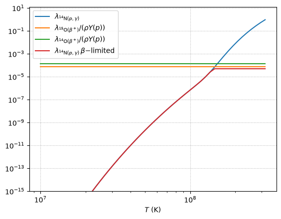
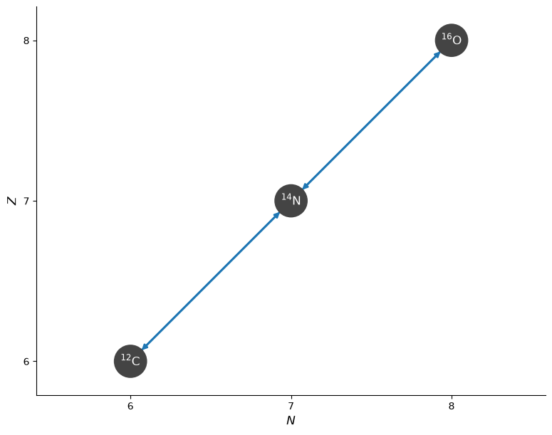
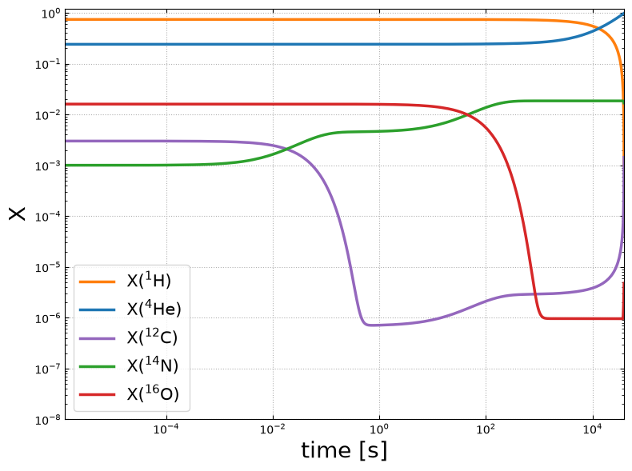
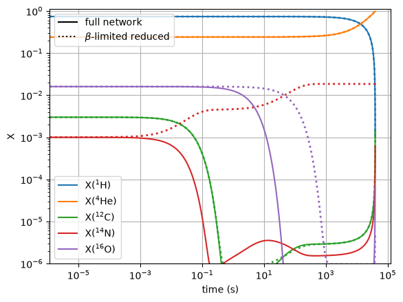
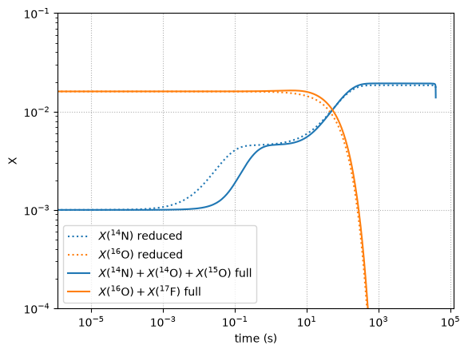
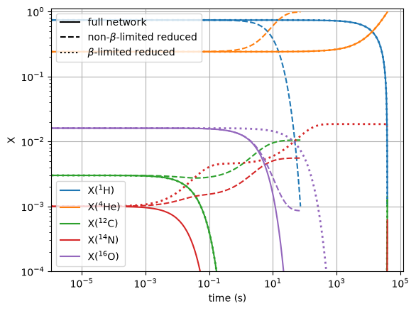

β-limited Rates#
In BranchedRate we did an approximation to the CNO cycle that only required 3 heavy nuclei. Now we want to revisit this and add an approximation to the hot-CNO.
CNO vs. hot-CNO#
The normal CNO cycle proceeds as:
and the hot-CNO cycle captures a proton onto \({}^{13}\mathrm{N}\), making \({}^{14}\mathrm{O}\):
At low temperatures, when the normal CNO cycle operates, \({}^{14}\mathrm{N}(p,\gamma){}^{15}\mathrm{O}\) is the bottleneck, and we build up \({}^{14}\mathrm{N}\).
As the temperature rises, we transition to the hot-CNO, and now the rate-limiting steps in the cycle are the \(\beta+\)-decays, \({}^{14}\mathrm{O}(,e^+\nu){}^{14}\mathrm{N}\) and \({}^{15}\mathrm{O}(,e^+\nu){}^{15}\mathrm{N}\), whose decay times are comparable. So we want to limit the overall flow through the entire cycle by those waiting points.
Our approximation#
Just like we did previously, we’ll model our approximation off of the widely-used aprox19 / aprox21 networks. These networks use 4 effective rates:
\({}^{12}\mathrm{C}(p,\gamma){}^{13}\mathrm{N}(\beta^+) {}^{13}\mathrm{C}(p,\gamma){}^{14}\mathrm{N}\)
Net: \({}^{12}\mathrm{C}+2p\rightarrow{}^{14}\mathrm{N}\)
\({}^{14}\mathrm{N}(p,\gamma){}^{15}\mathrm{O}(\beta^+) {}^{15}\mathrm{N}(p,\alpha){}^{12}\mathrm{C}\)
Net: \({}^{14}\mathrm{N}+2p\rightarrow{}^{12}\mathrm{C}+\alpha\)
\({}^{14}\mathrm{N}(p,\gamma){}^{15}\mathrm{O}(\beta^+) {}^{15}\mathrm{N}(p,\gamma){}^{16}\mathrm{O}\)
Net: \({}^{14}\mathrm{N}+2p\rightarrow{}^{16}\mathrm{O}\)
\({}^{16}\mathrm{O}(p,\gamma){}^{17}\mathrm{F}(\beta^+) {}^{17}\mathrm{O}(p,\alpha){}^{14}\mathrm{N}\)
Net: \({}^{16}\mathrm{O}+2p\rightarrow{}^{14}\mathrm{N}+\alpha\)
Sequences 1 and 2 represent the normal CNO cycle.
Sequence 3 is an alternate branch, and sequence 4 represents part of the CNO-II cycle. Without it, we would build up \({}^{16}\mathrm{O}\), which is unphysical.
Where to β-limit?#
Now for hot-CNO, we want to \(\beta\)-limit the overall sequence from \({}^{12}\mathrm{C}\) back to \({}^{12}\mathrm{C}\). The aprox19 network chooses
to put the waiting into sequences 2 and 3, by capping the \({}^{14}\mathrm{N}(p,\gamma){}^{15}\mathrm{O}\) rate. In this sense, it keeps \({}^{14}\mathrm{N}\)
as the bottleneck nucleus (we don’t have \({}^{14}\mathrm{O}\) or \({}^{15}\mathrm{O}\) in our network, so we can’t use them as the bottleneck).
We could instead choose to limit cycle 1 by \({}^{14}\mathrm{O}(\beta+){}^{14}\mathrm{N}\), which would split the bottleneck nucleus up between \({}^{12}\mathrm{C}\) and \({}^{14}\mathrm{N}\) (in an amount relative to the \({}^{14}\mathrm{O}\) and \({}^{15}\mathrm{O}\) waiting times). But this is not the path the original approximation took. So we will put all the waiting into \({}^{14}\mathrm{N}(p,\gamma){}^{15}\mathrm{O}\).
BetaLimitedRate#
A BetaLimitedRate represents a rate sequence by an effective rate capped by one or more \(\beta\)-decay times in the sequence.
In our case, we want to use \({}^{14}\mathrm{N}(p,\gamma){}^{15}\mathrm{O}\) as the main rate, but cap it at the total waiting time through \({}^{14}\mathrm{O}(\beta+){}^{14}\mathrm{N}\) and \({}^{15}\mathrm{O}(\beta+){}^{15}\mathrm{N}\)
For these weak rates, ReacLib gives us the decay constant, \(\lambda_{\beta^+}\), so the timescale associated with the decay is
\(1 / \lambda_{\beta^+}\). BetaLimitedRate accepts a list of decay rates and computes the total limiter as:
In our case, this will be:
We want to compare the flux of each rate. We’ll restrict ourselves to a 2-body reaction for the main rate. For the general case, the flux of the main rate (which we’ll write as \(X(\xi,\gamma)Z\)) is
where \(\lambda_{(\xi,\gamma)}\) is the \(T\)-dependent portion of the rate (e.g. \(N_A \langle \sigma v \rangle\)) we want to cap.
Our decay rate will have a flux of the form:
Note
In our CNO sequence, the main rate is \({}^{14}\mathrm{N}(p,\gamma){}^{15}\mathrm{O}\) and (one of the) decay rate is \({}^{15}\mathrm{O}(\beta^+){}^{15}\mathrm{N}\). But we don’t carry \({}^{15}\mathrm{O}\), instead all of the \({}^{15}\mathrm{O}\) that we have arrives through the rate sequence, and \({}^{14}\mathrm{N}\) acts as the reservoir nucleus:
This is why we write the flux of the decay in terms of \(Y(X)\).
We then want the smallest flux:
So our BetaLimitedRate will return the rate as:
Notice that we also need to give the nucleus, \(\xi\), as part of the
approximation. This is passed into BetaLimitedRate as limiter_nucleus.
Exploring a limited rate#
Before building the \(\beta\)-limited CNO cycle, let’s first look at the behavior of the limited \({}^{14}\mathrm{N}(p,\gamma){}^{15}\mathrm{O}\) rate.
import pynucastro as pyna
Get all the rates we need to construct the limited rate.
rl = pyna.ReacLibLibrary()
rn14pg = rl.get_rate_by_name("n14(p,g)o15")
ro15betap = rl.get_rate_by_name("o15(,)n15")
ro14betap = rl.get_rate_by_name("o14(,)n14")
Now construct the limited rate. Notice that we pass in a list of the \(\beta\)-decay rates that will act as the limiter.
rn14pg_betalim = pyna.rates.BetaLimitedRate(rn14pg,
[ro15betap, ro14betap],
limiter_nucleus="p",
description="N14(p,g)O15 limited by O14(β+) and O15(β+)")
We can see from the function that this rate produces that it follows the prescription described above:
print(rn14pg_betalim.function_string_py())
@numba.njit()
def N14_p_to_O15_betalimited(rate_eval, rho=None, Y=None):
# N14 + p --> O15
# represents the beta-limiting: N14(p,g)O15 limited by O14(β+) and O15(β+)
r0 = rate_eval.N14_p_to_O15_reaclib
lambda_beta_tot = 0.0
lambda_beta_tot += 1.0 / rate_eval.O15_to_N15_beta_pos_reaclib
lambda_beta_tot += 1.0 / rate_eval.O14_to_N14_beta_pos_reaclib
lambda_beta_tot = 1.0 / lambda_beta_tot
limited_rate = min(r0, lambda_beta_tot / (rho * Y[jp]))
rate_eval.N14_p_to_O15_betalimited = limited_rate
Let’s plot the temperature sensitivity of these. We’ll evaluate the \(\lambda\)’s over a range of temperatures. To make the comparison valid, we’ll scale the decay rates by \(\rho Y(p)\).
import matplotlib.pyplot as plt
import numpy as np
Ts = np.logspace(7, 8.5, 50)
rho = 100
comp = pyna.Composition(["p", "he4", "c12", "n14",
"n15", "o15", "o16"],
init="solar")
Yp = comp.get_molar()[pyna.Nucleus("p")]
First get the original rates
lam_n14pg = [rn14pg.eval(T, rho=rho, comp=comp) for T in Ts]
lam_o15betap = [ro15betap.eval(T, rho=rho, comp=comp) / (rho * Yp)
for T in Ts]
lam_o14betap = [ro14betap.eval(T, rho=rho, comp=comp) / (rho * Yp)
for T in Ts]
Now our limited rate
lam_n14pg_betalim = [rn14pg_betalim.eval(T, rho=rho, comp=comp)
for T in Ts]
Finally, plot it
fig, ax = plt.subplots()
ax.loglog(Ts, lam_n14pg, label=r"$\lambda_{{}^{14}\mathrm{N}(p,\gamma)}$")
ax.loglog(Ts, lam_o15betap, label=r"$\lambda_{{}^{15}\mathrm{O}(\beta^+)} / (\rho Y(p))$")
ax.loglog(Ts, lam_o14betap, label=r"$\lambda_{{}^{14}\mathrm{O}(\beta^+)} / (\rho Y(p))$")
ax.loglog(Ts, lam_n14pg_betalim,
label=r"$\lambda_{{}^{14}\mathrm{N}(p,\gamma)}\, \beta \rm{-limited}$")
ax.grid(ls=":")
ax.set_ylim(1.e-15,)
ax.set_xlabel(r"$T$ (K)")
ax.legend()
<matplotlib.legend.Legend at 0x7f4a6971a900>

The red curve is our limited rate. We see the expected behavior—it follows the \((p,\gamma)\) rate until it reaches the \(\beta\)-decay limit, and then it is flat afterwards.
This is why the hot-CNO cycle is essentially insensitive to temperature—you are just waiting on the \(\beta\)-decays.
CNO/hot-CNO approximate network#
We will follow the approach used for low-temperature CNO in BranchedRate, but now add the \(\beta\)-limiting to capture the transition to hot-CNO.
In addition to the limiting above, we will also \(\beta\)-limit the \({}^{16}\mathrm{O}(p,\gamma){}^{17}\mathrm{F}\) rate.
from pynucastro import Nucleus
Get all the rates we will need for the approximations.
rc12pg = rl.get_rate_by_name("c12(p,g)n13")
rn15pa = rl.get_rate_by_name("n15(p,a)c12")
rn15pg = rl.get_rate_by_name("n15(p,g)o16")
ro16pg = rl.get_rate_by_name("o16(p,g)f17")
rf17betap = rl.get_rate_by_name("f17(,)o17")
Our effective rate for \({}^{12}\mathrm{C}+2p\rightarrow{}^{14}\mathrm{N}\) is unchanged from our earlier approximation,
and uses ModifiedRate.
rc12_2p_n14 = pyna.ModifiedRate(rc12pg,
new_products=[Nucleus("n14")],
stoichiometry={Nucleus("p"): 2},
description="C12(p,g)N13(,e+nu)C13(p,g)N14")
Now the \({}^{14}\mathrm{N} + 2p\) branches. These are BranchedRate, and will use our new \(\beta\)-limited rate constructed above
rn14_2p_c12 = pyna.BranchedRate(rn14pg_betalim,
primary_branch=rn15pa,
other_branch=rn15pg,
stoichiometry={Nucleus("p"): 2},
description="N14(p,g)O15(,e+nu)N15(p,a)C12")
rn14_2p_o16 = pyna.BranchedRate(rn14pg_betalim,
primary_branch=rn15pg,
other_branch=rn15pa,
stoichiometry={Nucleus("p"): 2},
description="N14(p,g)O15(,e+nu)N15(p,g)O16")
Finally for \({}^{16}\mathrm{O} + 2 p \rightarrow {}^{14}\mathrm{N} + \alpha\) we first \(\beta\)-limit the initial rate in the sequence.
ro16pg_betalim = pyna.rates.BetaLimitedRate(ro16pg,
[rf17betap],
limiter_nucleus="p",
description="O16(p,g)F17 limited by F17(β+)")
and then use this in a ModifiedRate:
ro16_2p_n14_a = pyna.ModifiedRate(ro16pg_betalim,
new_products=[Nucleus("n14"),
Nucleus("he4")],
stoichiometry={Nucleus("p"): 2},
description="O16(p,g)F15(e+nu)O17(p,a)N14")
Putting them all together, we have our approximate CNO/hot-CNO network:
net_reduced = pyna.PythonNetwork(rates=[rc12_2p_n14,
rn14_2p_c12,
rn14_2p_o16,
ro16_2p_n14_a])
net_reduced.summary()
Network summary
---------------
explicitly carried nuclei: 5
approximated-out nuclei: 0
inert nuclei (included in carried): 0
NSE compatible? False
total number of rates: 14
rates explicitly connecting nuclei: 4
hidden rates: 5
reaclib rates: 8
starlib rates: 0
temperature tabular rates: 0
weak tabular rates: 0
beta-limited rates: 2
approximate rates: 0
derived rates: 0
branched rates: 2
modified rates: 2
custom rates: 0
fig = net_reduced.plot()

Integrating our network#
Now we can build our network
comp_reduced = pyna.Composition(net_reduced.unique_nuclei, small=0.0)
comp_reduced[Nucleus("p")] = 0.74
comp_reduced[Nucleus("he4")] = 0.24
comp_reduced[Nucleus("c12")] = 0.003
comp_reduced[Nucleus("n14")] = 0.001
comp_reduced[Nucleus("o16")] = 0.016
We’ll pick a temperature high enough that we expect hot-CNO to operate. To avoid triggering 3-\(\alpha\) (which will be present in the full network we compare with), we’ll use a low density.
rho = 100
T = 3.e8
We’ll integrate until H is depleted.
tmax = 1.e20
sol_reduced = net_reduced.integrate_network(tmax, rho, T, comp_reduced,
atol=1.e-10,
stopping_condition=("h1", 1.e-3))
fig = sol_reduced.plot_evolution(ymin=1.e-8)
/opt/hostedtoolcache/Python/3.14.8/x64/lib/python3.14/site-packages/pynucastro/networks/python_network.py:538: UserWarning: Attempt to set non-positive xlim on a log-scaled axis will be ignored.
ax.set_xlim(tmin, tmax)

Full network comparison#
net = pyna.network_helper(["p", "he4", "c12,13",
"n13-15",
"o14-17",
"f17"],
tabular_ordering=["ffn", "oda"],
with_reverse=False)
comp = pyna.Composition(net.unique_nuclei, small=0.0)
comp[Nucleus("p")] = 0.74
comp[Nucleus("he4")] = 0.24
comp[Nucleus("c12")] = 0.003
comp[Nucleus("n14")] = 0.001
comp[Nucleus("o16")] = 0.016
sol = net.integrate_network(tmax, rho, T, comp,
atol=1.e-10,
stopping_condition=("h1", 1.e-3))
We’ll plot the full network and our reduced network on the same axes.
import matplotlib.pyplot as plt
from matplotlib.lines import Line2D
fig, ax = plt.subplots()
for i, nuc in enumerate(sol_reduced.unique_nuclei):
ax.loglog(sol_reduced.t, sol_reduced.X[i, :],
linestyle=":", lw="2", color=f"C{i}")
idx = sol.unique_nuclei.index(nuc)
ax.loglog(sol.t, sol.X[idx, :],
label=rf"X$({nuc.pretty})$",
linestyle="-", color=f"C{i}")
ax.set_ylim(1.e-6, 1.1)
ax.set_xlabel("time (s)")
ax.set_ylabel("X")
leg1 = ax.legend()
ax.add_artist(leg1)
style_handles = [
Line2D([0], [0], color="black", linestyle="-", label="full network"),
Line2D([0], [0], color="black", linestyle=":", label=r"$\beta$-limited reduced"),
]
ax.legend(handles=style_handles, loc=2)
ax.grid()

We see excellent agreement in the \(p\), \({}^{4}\mathrm{He}\), and \({}^{12}\mathrm{C}\), but the \({}^{14}\mathrm{N}\) and \({}^{16}\mathrm{O}\) do not agree.
This is not an error, but it instead reflects the choices we made in where to put the waiting-point nuclei. In the full network, there will be a bottleneck at \({}^{14}\mathrm{O}\) and \({}^{15}\mathrm{O}\), but we don’t carry those nuclei and instead choose to add those waiting points to the \({}^{14}\mathrm{N}\) sequence. So we should compare \(X({}^{14}\mathrm{N})\) in the reduceed network to \(X({}^{14}\mathrm{N}) + X({}^{14}\mathrm{O}) + X({}^{15}\mathrm{O})\) oin the full network. Likewise, we should compare \({}^{16}\mathrm{O}\) in the reduced network to \(X({}^{16}\mathrm{O}) + X({}^{17}\mathrm{F})\) in the full network.
Let’s plot that comparison now.
fig, ax = plt.subplots()
in14_reduced = sol_reduced.unique_nuclei.index(Nucleus("n14"))
io16_reduced = sol_reduced.unique_nuclei.index(Nucleus("o16"))
ax.loglog(sol_reduced.t, sol_reduced.X[in14_reduced, :],
label=r"$X({}^{14}{\rm N})$ reduced",
linestyle=":", color="C0")
ax.loglog(sol_reduced.t, sol_reduced.X[io16_reduced, :],
label=r"$X({}^{16}{\rm O})$ reduced",
linestyle=":", color="C1")
in14 = sol.unique_nuclei.index(Nucleus("n14"))
io14 = sol.unique_nuclei.index(Nucleus("o14"))
io15 = sol.unique_nuclei.index(Nucleus("o15"))
io16 = sol.unique_nuclei.index(Nucleus("o16"))
if17 = sol.unique_nuclei.index(Nucleus("f17"))
ax.loglog(sol.t, sol.X[in14, :] + sol.X[io14, :] + sol.X[io15, :],
label=r"$X({}^{14}{\rm N}) + X({}^{14}{\rm O}) + X({}^{15}{\rm O})$ full",
linestyle="-", color="C0")
ax.loglog(sol.t, sol.X[io16, :] + sol.X[if17, :],
label=r"$X({}^{16}{\rm O}) + X({}^{17}{\rm F})$ full",
linestyle="-", color="C1")
ax.set_ylim(1.e-4, 0.1)
ax.set_xlabel("time (s)")
ax.set_ylabel("X")
leg1 = ax.legend()
ax.grid(ls=":")

Now we see really good agreement.
Non-\(\beta\)-limited approximation comparison#
As a final comparison, let’s compare to a network that does not \(\beta\)-limit the approximate rates (this is what we used in BranchedRate.
We’ll redo the BranchedRate without the BetaLimitedRate as the underlying rate.
rn14_2p_c12_nolim = pyna.BranchedRate(rn14pg,
primary_branch=rn15pa,
other_branch=rn15pg,
stoichiometry={Nucleus("p"): 2},
description="N14(p,g)O15(,e+nu)N15(p,a)C12")
rn14_2p_o16_nolim = pyna.BranchedRate(rn14pg,
primary_branch=rn15pg,
other_branch=rn15pa,
stoichiometry={Nucleus("p"): 2},
description="N14(p,g)O15(,e+nu)N15(p,g)O16")
and the same with the \({}^{16}\mathrm{O}\) sequence:
ro16_2p_n14_a_nolim = pyna.ModifiedRate(ro16pg,
new_products=[Nucleus("n14"),
Nucleus("he4")],
stoichiometry={Nucleus("p"): 2})
net_nolim = pyna.PythonNetwork(rates=[rc12_2p_n14,
rn14_2p_c12_nolim,
rn14_2p_o16_nolim,
ro16_2p_n14_a_nolim])
The composition is the same as the reduced network, so we can just reuse that for our integration.
sol_nolim = net_nolim.integrate_network(tmax, rho, T, comp_reduced,
atol=1.e-10,
stopping_condition=("h1", 1.e-3))
fig, ax = plt.subplots()
for i, nuc in enumerate(sol_reduced.unique_nuclei):
ax.loglog(sol_reduced.t, sol_reduced.X[i, :],
linestyle=":", lw="2", color=f"C{i}")
ax.loglog(sol_nolim.t, sol_nolim.X[i, :],
linestyle="--", color=f"C{i}")
idx = sol.unique_nuclei.index(nuc)
ax.loglog(sol.t, sol.X[idx, :],
label=rf"X$({nuc.pretty})$",
linestyle="-", color=f"C{i}")
ax.set_ylim(1.e-4, 1.1)
ax.set_xlabel("time (s)")
ax.set_ylabel("X")
leg1 = ax.legend()
ax.add_artist(leg1)
style_handles = [
Line2D([0], [0], color="black", linestyle="-", label="full network"),
Line2D([0], [0], color="black", linestyle="--", label=r"non-$\beta$-limited reduced"),
Line2D([0], [0], color="black", linestyle=":", label=r"$\beta$-limited reduced"),
]
ax.legend(handles=style_handles, loc=2)
ax.grid()

Here we see that the non-\(\beta\)-limited reduced network burns the H far too fast. It gets the evolution completely wrong.